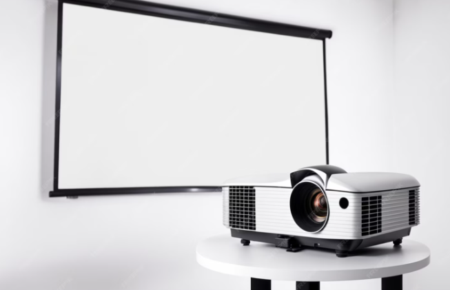

Texto
¿Qué son los dispositivos de salida ?Los dispositivos de salida son las partes del computador que nos permiten ver, escuchar o recibir la información que la máquina produce. Cuando el computador termina de procesar algo, estos dispositivos nos muestran el resultado para que podamos entenderlo. Sin los dispositivos de salida, no podríamos ver imágenes, escuchar sonidos ni obtener documentos impresos. |
 |
Texto
Dispositivos de salida
ProyectorEl proyector es un dispositivo que muestra la imagen del computador en una pared o pantalla grande. Funciona recibiendo la imagen desde la computadora y proyectándola ampliada para que muchas personas puedan verla al mismo tiempo. En la escuela, por ejemplo, se usa cuando el profesor presenta videos o diapositivas a toda la clase.  |
MonitorEl monitor es la pantalla del computador. Su función es mostrar imágenes, textos y videos para que podamos ver lo que estamos haciendo. Cada vez que juegas, ves una película o escribes en un programa, toda esa información aparece en el monitor. Esto permite que interactúes de forma visual con la computadora. |
ImpresoraLa impresora es un dispositivo que convierte la información del computador en documentos físicos sobre papel. Funciona recibiendo la información digital y plasmándola en hojas, ya sea en forma de textos, dibujos o imágenes. Un ejemplo común es cuando imprimes una tarea, un informe o una fotografía que necesitas entregar.
|
ParlantesLos parlantes son aparatos que producen sonido. Funcionan recibiendo las señales del computador y transformándolas en sonidos que podemos escuchar claramente. Gracias a los parlantes puedes oír música, efectos de un videojuego o el audio de un video educativo.
|
AudífonosLos audífonos son dispositivos que también producen sonido, pero solo lo escuchan las personas que los usan. Funcionan igual que los parlantes, transformando las señales del computador en sonidos, pero los envían directamente a los oídos del usuario. Son útiles cuando quieres escuchar música o un video sin molestar a los demás. |